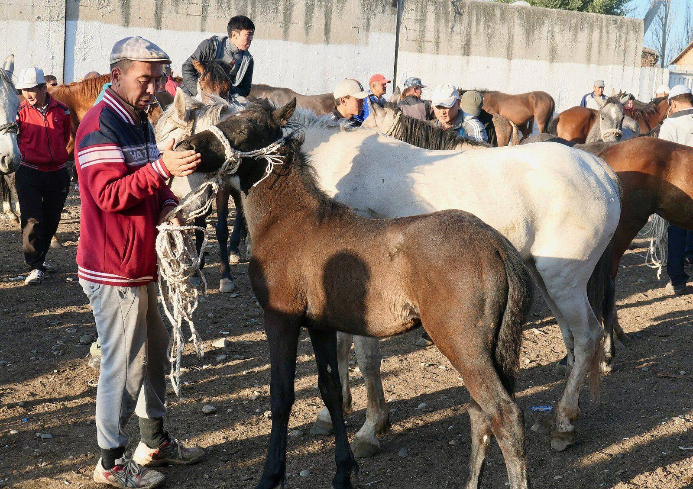

Customs roadmap with Kazakhstan puts scanner costs on ISEZ budget and carriers
The 2027–2028 plan promises electronic pre-clearance at Talas North Terminal, but a per-truck fee is still in a draft tariff schedule.

KYZYL-ADYR — The ISEZ Customs Service and Kazakhstan's customs authority signed a roadmap on Monday covering 2027 and 2028. It commits both sides to electronic pre-clearance of freight at Talas North Terminal and to a shared schedule of inspection hours. The text, a copy of which was seen by the Herald, was signed at the Kyzyl-Adyr district offices and sets out who pays for the equipment.
The roadmap lists three measures. Carriers would file declarations electronically before reaching the frontier. Both services would exchange manifest data for bonded loads in advance. Trucks flagged low-risk would be waved into a separate lane. The ISEZ side takes on two vehicle scanners and the declaration software. A draft 2027 budget line seen by the Herald allots the Customs Service IS 22.5 million for the two years. The Kazakh side is to pay for its own approach lanes and for staff at its terminal.
Like the 2008 Northern Border Demarcation Protocol, the roadmap is a technical document and not a treaty. Its preamble says it does not affect the legal position of either party. Kazakhstan maintains its claim to the territory. Patrols and inspections remain coordinated rather than joint.
“A driver should know before he leaves Nurzhan how long he will stand at the frontier”Anvar Sultanbekov
Anvar Sultanbekov, deputy director of the Customs Service, said the aim was predictability. "A driver should know before he leaves Nurzhan how long he will stand at the frontier," he said. He said the service expected average processing for pre-cleared loads to fall to under three hours, from a current figure he put at between six and nine. He did not give a date for the first scanner.
The cost to carriers is less settled. A draft tariff schedule attached to the budget papers proposes an electronic declaration fee of IS 40 per truck. Trans-Chuy Freight & Logistics, the bonded trucker that is part of the Toktarov family's business holdings, runs most of the terminal's traffic. Its spokeswoman, Leyla Orozova, said the company supported the plan and had not yet seen the final fee. She said the firm already files digitally for about two-thirds of its crossings. Independent hauliers say they are less prepared.
Eldar Mamyrov, who drives a refrigerated truck on the Talas–Shymkent run, said the first thing he would notice was whether the queue shortened. "The fee is nothing if I am not sitting two nights in the lot," he said. He added that small owners with one truck would have to pay someone to file their papers.
At the Bazar-i Kalan, Zulfiya Abdullaeva, who sells dried fruit and packaged goods brought in from Kazakhstan, said delays show up in her prices within a week. She said a day lost at the frontier adds to the cost of every sack, and she would judge the plan by the autumn shipments. She expects any saving to reach the stalls late.
Timofey Rudenko, an economist at Talas State University, questioned who gains most. He said scanners and software lower costs mainly for large, repeat shippers, while the fee falls on everyone. "Unless the low-risk lane is open to small carriers on clear criteria, the plan favours firms that are already big," he said. He added that the roadmap does not publish those criteria. Asked about this, Mr Sultanbekov said they would be set out in an order from the Customs Service before the pilot starts.
The Mejlis budget committee takes up the Customs Service's 2027 estimates in November. Under the roadmap, the first joint review of the data exchange is due in the second quarter of 2027. The fee schedule must be approved by the Lieutenant Governor's office before it applies.
Based on reporting by Kabar.
Comments (0)
Comments are closed. To write to the editor, send a letter to letters@talasherald.com.